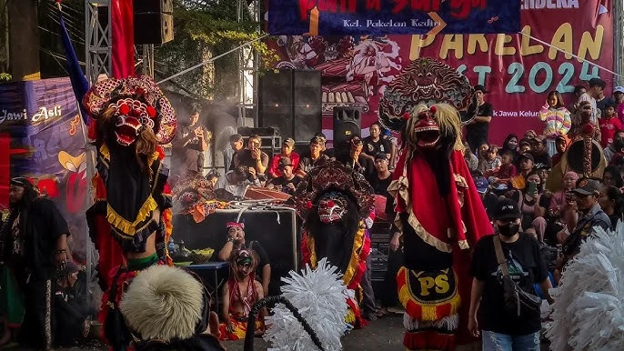

Barongsai adalah seni pertunjukan budaya Tionghoa yang sarat makna filosofis, berfungsi sebagai simbol penolak bala, pembawa keberuntungan, sekaligus media pemersatu lintas etnis dan agama di masyarakat.
Barongsai sempat mengalami pelarangan tampil di ruang publik pada periode 1965–1998, namun kembali berkembang sejak kebijakan keterbukaan tahun 2000 dan kini diakui sebagai cabang olahraga prestasi serta bagian dari budaya nasional Indonesia.